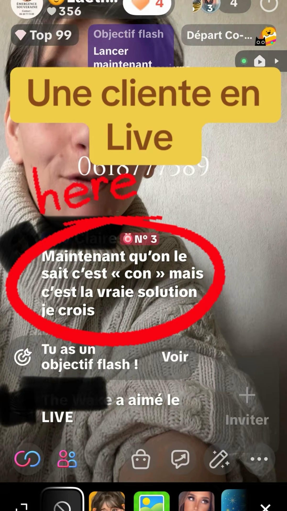
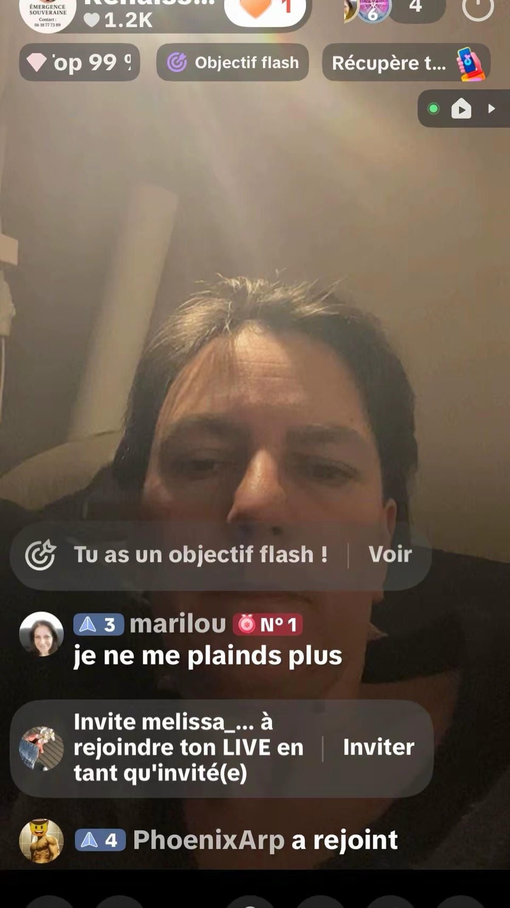
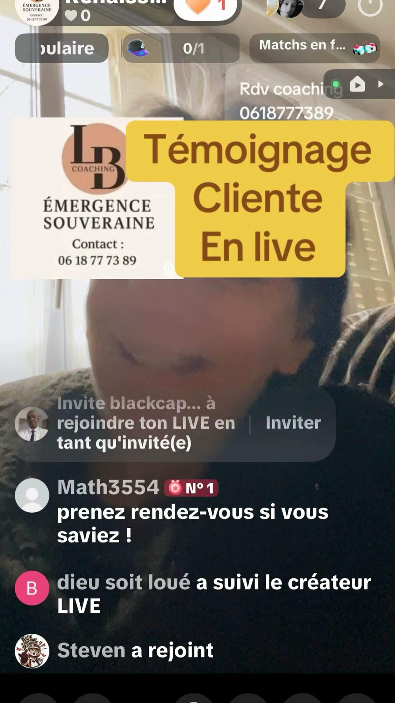
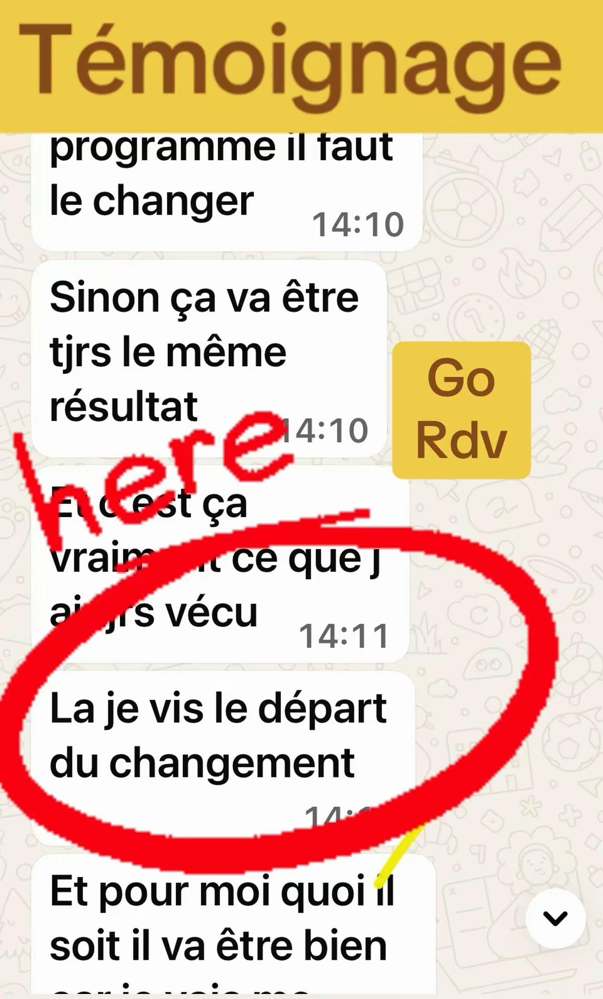
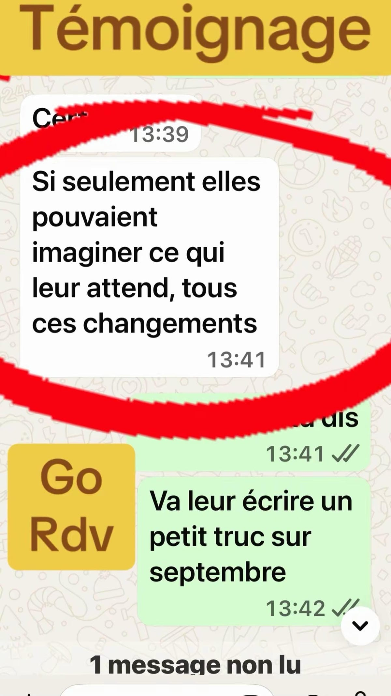
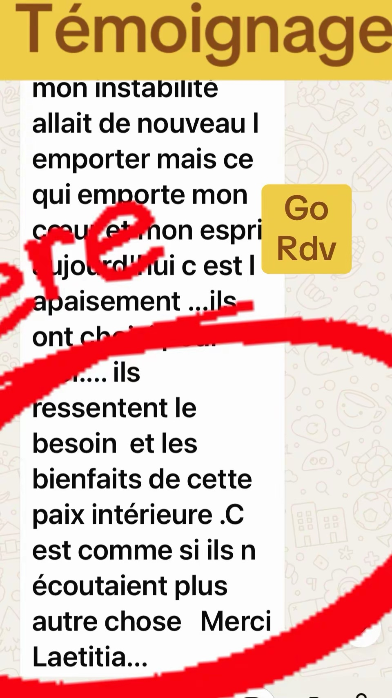
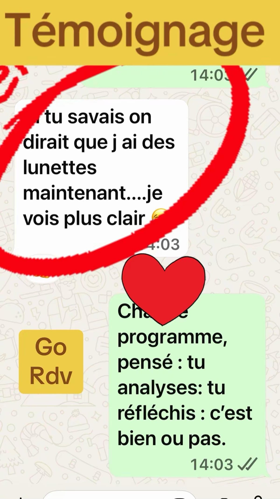
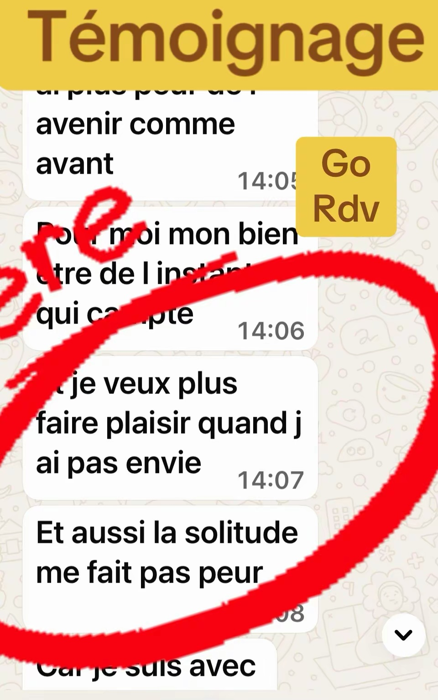
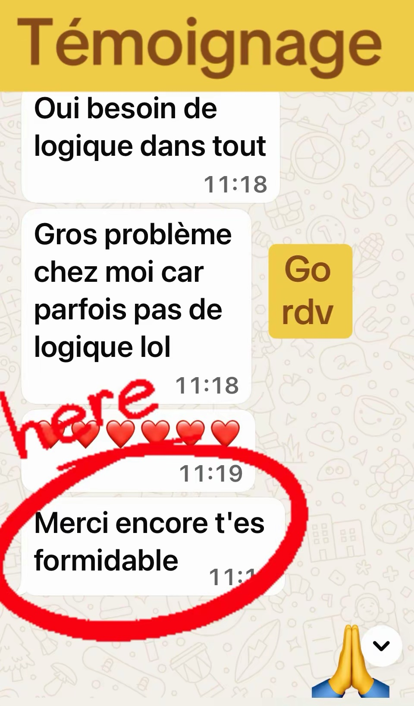

Témoignages
Des parcours de transformation, de reprise de confiance et de retour à soi.
Des évolutions réelles.
Des prises de conscience.
Des personnes qui ont repris leur place.
Témoignages vidéo
Retours d’expérience, évolutions, prises de conscience et transformations.
Me contacter sur WhatsAppMoments de transformation en direct live



Des parcours différents, mais un même objectif : retrouver sa place et reprendre confiance.
Me contacter sur WhatsAppRetours WhatsApp
Derrière chaque message, il y a une personne qui a commencé à comprendre ses mécanismes, retrouver de la clarté et reprendre confiance.






“Parfois, quelques prises de conscience suffisent à remettre du mouvement dans une vie.”
Me contacter sur WhatsApp“Monique après souveraine: Cet accompagnement à transformé ma vie, m'a permis de trouver la paix.”
“Samira après emergence: c'est comme si j'avais retrouvée mes lunettes.”
“Olivia après emergence: Merci à Laetitia pour cet accompagnement.”